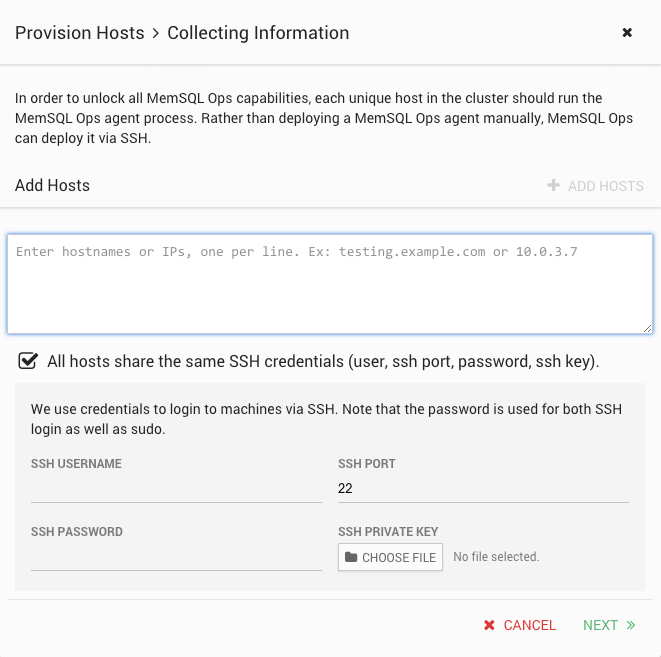
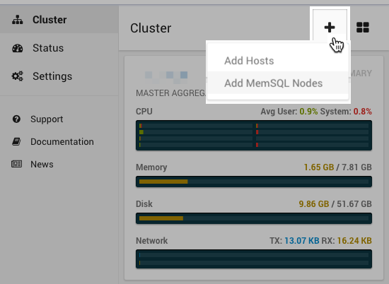
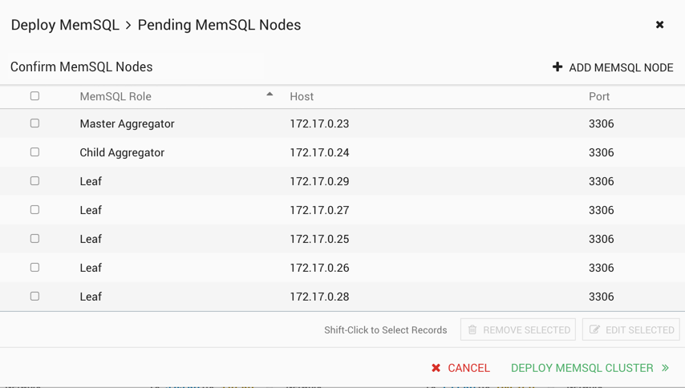

Offline Installation¶
You may need to perform a partial or full installation of MemSQL offline if one of these conditions are met:
The primary agent host does not have internet access
Certain system limitations prevent users from having full access to hosts such as limitations on:
- sudo
- ssh
- port access
The degree to which you may need to perform an offline installation will depend on the extent to which your system access is limited.
This section lists all the steps needed to do a fully offline cluster installation. This section also assumes that you have read the steps to install MemSQL online, which is described in the On-Premises Deployment section of the Quick Start Guide.
Important
If any manual actions are required, it is recommended to familiarize yourself with the MemSQL Ops command line interface before proceeding with an installation.
Follow the steps below to set up your MemSQL cluster:
Download the MemSQL Ops installer from memsql.com/download using a machine with internet access. This downloaded file should be a compressed tar.gz file. After downloading, copy the file to your chosen primary agent host.
Unpack the compressed MemSQL Ops installer inside your primary host, which expands into the MemSQL Ops folder, memsql-ops-<version>.
tar xvf memsql-ops-<version>.tar.gz
Install MemSQL Ops on your primary agent.
With sudo access
Within that MemSQL Ops folder, run sudo ./install.sh. This will install MemSQL Ops on the primary host.
Without sudo access
If you do not have sudo access on the machine, do the following:
Ensure the memsql-ops-<version> directory is in a directory you have access to. (required)
Set up memsql-ops to initialize at system startup (i.e. ensure /path/to/memsql-ops/memsql-ops start runs at system start). Refer to your distribution’s guides for more information on how to do this. (recommended)
Configure Linux settings for your host as described in the Installation Best Practices section. (recommended)
Start the MemSQL Ops agent and web interface. This does not configure any system-wide permissions or settings. (required)
/path/to/memsql-ops/memsql-ops start
Once MemSQL Ops is installed on the primary host, the MemSQL Ops web interface will be accessible on http://<primary_host_name>:9000. Point your browser to that URL and follow the steps to configure additional MemSQL Ops hosts and finish configuring your MemSQL cluster.
Without port 9000 accessible from your browser
By default, MemSQL Ops will expose its web interface on port 9000. The web interface is the recommended way of installing MemSQL and MemSQL Ops, so restart MemSQL Ops on an exposed port if possible.
/path/to/memsql-ops/memsql-ops stop /path/to/memsql-ops/memsql-ops start --port NNN
Provide MemSQL Ops with a license file and a build of MemSQL. If internet access is not available on your primary agent or the web GUI is not available, the license and binary files must be downloaded manually.
Through the web interface and with internet access on the primary agent
Choose to deploy either the Enterprise or Community Edition of MemSQL.
Important
If you select the Enterprise Edition, the MemSQL Ops web interface will prompt you for a valid license key. If you do not have one already, you can obtain a license key either through memsql.com/download or by contacting your MemSQL sales representative.
Through the command line interface (without web interface or without internet access)
Download the MemSQL database binary on a machine with internet access and copy it to your primary agent.
- For Community Edition: http://download.memsql.com/releases/latest/memsqlbin_amd64.tar.gz
- For Enterprise Edition: http://download.memsql.com/<LICENSE_KEY>/memsqlbin_amd64.tar.gz
Add the MemSQL binary to your primary agent.
memsql-ops file-add -t memsql /path/to/memsqlbin.tar.gz
Deploy MemSQL Ops to the remaining machines in your cluster. By default, MemSQL Ops uses SSH to deploy agents to new hosts in your cluster. If SSH is not available between the hosts in your cluster, you must add each host to the MemSQL Ops cluster manually.
With ssh access
From the web interface
MemSQL Ops will ask for information about other hosts in your cluster. Provide valid SSH credentials for each of the hosts in your cluster. Through SSH, the primary MemSQL Ops agent will install itself into those other hosts.

From the command line
Deploy MemSQL Ops to each host in your cluster manually. This will use SSH to set the cluster up.
/path/to/memsql-ops/memsql-ops deploy-agent -h <SSH HOST> -P <SSH PORT> -u <SSH USER> -p <SSH PASSWORD> -i <SSH PRIVATE KEY>
Important
If sudo is not accessible, you may be required to add --allow-no-sudo.
Without ssh access
Deploy MemSQL Ops to each host in your cluster manually. Repeat steps 1 - 4 of this guide on each host in your cluster. Inform each of your new hosts about the location of the primary agent.
/path/to/memsql-ops/memsql-ops follow -h <primary_hostname> -P <primary_host_port>
Note
After deploying to a host, MemSQL Ops communicates with other agents exclusively over the agent port, so SSH will not be required.
After the MemSQL Ops agent is installed into each of the other hosts, you can add MemSQL nodes into those hosts.
From the web interface
In the MemSQL Ops web interface, click on the “+” button, and select “Add MemSQL Nodes”:
You will see a prompt that recommends a possible configuration (master aggregator, child aggregators, leaf nodes) for your cluster. Once you are satisfied with the configuration, click “Deploy MemSQL Cluster”.
MemSQL Ops will take the following steps to deploy MemSQL to each host:
- Retrieve the MemSQL database binary. If you have a working internet connection, it will download the binary from memsql.com/download. Otherwise, it will look to see if a file has been added locally.
- Install the MemSQL database on each host
- Set up the MemSQL cluster according to your desired configuration.
From the command line
Decide on a cluster configuration. For more information, see the documentation on Cluster Components.
Note
It is recommended to deploy the primary agent as the MemSQL master aggregator.
From each host in your cluster, deploy a MemSQL node using MemSQL Ops
/path/to/memsql-ops/memsql-ops memsql-deploy --role {master,aggregator,leaf,single_box}
Connect to the master aggregator using any valid MySQL client driver. For example:
mysql -u root -h <master_aggregator_hostname> -P 3306 --prompt="memsql> "
You can now start creating databases and querying MemSQL! Here’s a set of sample commands to get you started. You can copy-paste these directly into your MemSQL session.
-- create a new user
grant all on *.* to 'myuser'@'%' identified by 'mypassword';
-- show all memsql leaf nodes
show leaves;
-- create a new database
create database mymemsqldb;
show databases;
use mymemsqldb;
-- create a new table
create table mytable (id INT PRIMARY KEY, name varchar(10));
show tables;
describe mytable;
-- perform data query operations
insert into mytable values (1, 'hello');
select * from mytable;
Next Steps